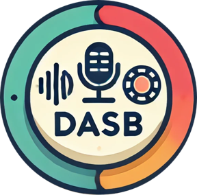

📊 Available Benchmarks
SpeechBrain aims to promote transparent and reproducible research.
To advance this mission, we develop benchmarks that help researchers conduct fair, robust, and standardized performance comparisons. We have created a dedicated repository for this purpose.
The following benchmarks are currently available:
SpeechBrain-MOABB is an open-source Python library for benchmarking deep neural networks applied to EEG signals.
This repository provides a set of recipes for processing electroencephalographic (EEG) signals based on the popular Mother of all BCI Benchmarks (MOABB) , seamlessly integrated with SpeechBrain.
This package facilitates the integration and evaluation of new algorithms (e.g., a novel deep learning architecture or a novel data augmentation strategy) in standardized EEG decoding pipelines based on MOABB-supported tasks, i.e., motor imagery (MI), P300, and steady-state visual evoked potential (SSVEP).
It not only offers an interface for easy model integration and testing but also proposes a fair and robust protocol for comparing different decoding pipelines, fully described in our paper:
- Davide Borra, Francesco Paissan, and Mirco Ravanelli. SpeechBrain-MOABB: An open-source Python library for benchmarking deep neural networks applied to EEG signals. Computers in Biology and Medicine, Volume 182, 2024. [Paper]
- Davide Borra, Elisa Magosso, and Mirco Ravanelli. https://www.sciencedirect.com/science/article/pii/S0893608024007718 Neural Networks, Page 106847, 2024. [Paper]

DASB - Discrete Audio and Speech Benchmark is a benchmark for evaluating discrete audio representations using popular audio tokenizers like EnCodec, DAC, and many more, integrated with SpeechBrain.
The package helps integrate and evaluate new audio tokenizers in speech tasks of great interest such as speech recognition, speaker identification, emotion recognition, keyword spotting, intent classification, speech enhancement, separation, text-to-speech, and many more.
It offers an interface for easy model integration and testing and a protocol for comparing different audio tokenizers.
- Pooneh Mousavi, Luca Della Libera, Jarod Duret, Arten Ploujnikov, Cem Subakan, Mirco Ravanelli, DASB - Discrete Audio and Speech Benchmark, 2024 arXiv preprint arXiv:2406.14294. [Paper]
CL-MASR
is a Continual Learning Benchmark for Multilingual ASR.
It includes scripts to train Whisper and WavLM-based ASR systems on a subset of 20 languages selected from Common Voice 13 in a continual learning fashion using a handful of methods including rehearsal-based, architecture-based, and regularization-based approaches.
The goal is to continually learn new languages while limiting forgetting the previously learned ones.
An ideal method should achieve both positive forward transfer (i.e. improve performance on new tasks leveraging shared knowledge from previous tasks) and positive backward transfer (i.e. improve performance on previous tasks leveraging shared knowledge from new tasks).
- Luca Della Libera, Pooneh Mousavi, Salah Zaiem, Cem Subakan, Mirco Ravanelli, (2024). CL-MASR: A continual learning benchmark for multilingual ASR. IEEE/ACM Transactions on Audio, Speech, and Language Processing, 32, 4931–4944. [Paper]
MP23 - Multi-probe Speech Self Supervision Benchmark aims to evaluate self-supervised representations on various downstream tasks, including ASR, speaker verification, emotion recognition, and intent classification.
The key feature of this benchmark is that it allows users to choose their desired probing head for downstream training.
This is why we called it the Multi-probe Speech Self Supervision Benchmark (MP3S). It has been demonstrated that the performance of the model is greatly influenced by this selection
- Salah Zaiem, Youcef Kemiche, Titouan Parcollet, Slim Essid, Mirco Ravanelli, (2023). Speech Self-Supervised Representation Benchmarking: Are We Doing it Right? Proceedings of Interspeech 2023 [Paper]
- Salah Zaiem, Youcef Kemiche, Titouan Parcollet, Slim Essid, Mirco Ravanelli, (2023). Speech self-supervised representations benchmarking: a case for larger probing heads. Computer Speech & Language, 89, 101695. [Paper]